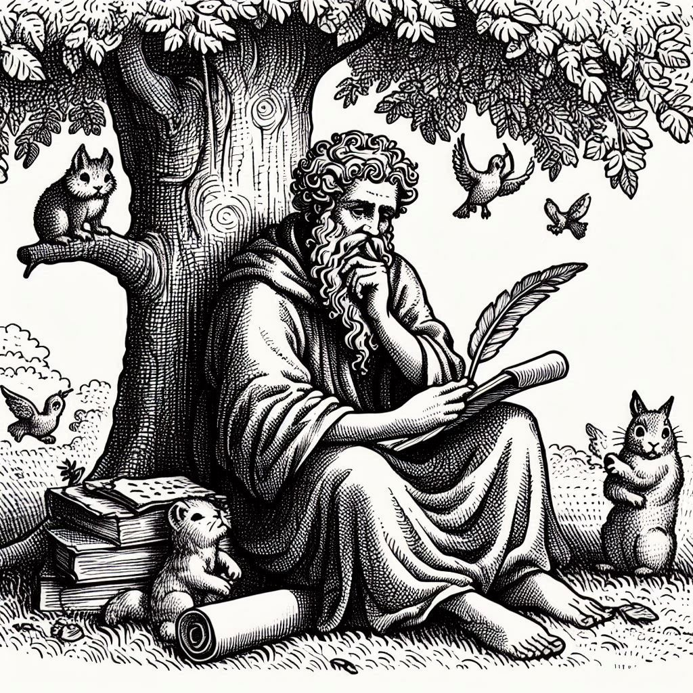

Aristóteles (384-322 a.C.) fue un filósofo griego nacido en Estagira, Macedonia.
Infancia y educación
- Hijo de Nicómaco, médico del rey Amintas III de Macedonia.
- Estudió en la Academia de Platón en Atenas a los 17 años.
- Permaneció en la Academia durante 20 años.
Carrera
- Tutor de Alejandro Magno en la corte de Filipo II de Macedonia.
- Fundó el Liceo en Atenas, una institución educativa y de investigación.
- Dirigió el Liceo durante 12 años.
Obras principales
- "Metafísica"
- "Física"
- "Ética a Nicómaco"
- "Política"
- "De Anima" (Sobre el alma)
- "Historia Animalium" (Historia de los animales)
Pensamiento
- Filosofía aristotélica: realidad, conocimiento y verdad.
- Cuatro causas: material, formal, eficiente y final.
- Concepto de "telos" (propósito o fin).
- Teoría del alma y la vida.
- Lógica y silogismo.
Influencia
- Fundador del aristotelismo.
- Influencia en la filosofía occidental y islámica.
- Inspiró a pensadores como Tomás de Aquino y Avicena.
- Base de la educación medieval y renacentista.
Muerte
- Murió en Calcis, Eubea, a los 62 años.
Legado
- Desarrolló la lógica y la filosofía científica.
- Estableció la base de la biología y la zoología.
- Influencia en la filosofía, la ciencia y la política.
Algunos de sus conceptos clave son:
- La substancia y los accidentes.
- La potencia y el acto.
- La causa y el efecto.
- La virtud y la felicidad.
Aristóteles es considerado uno de los más grandes filósofos de la historia, y su legado sigue influyendo en la filosofía, la ciencia y la política.